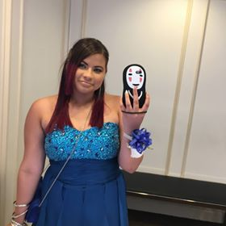
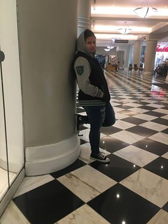

This is me in my definition of different stages of genders. I am genderfluid and really did not know I was until getting to college.

Feeling Male |

Feeling like Both |
|

Feeling Female |

Feeling like Neither |
My Story
This is me, my name is Maria but my nickname is Matt. I'm still not really sure what I am up but I started to learn more until my late senior year in high school and even now that I'm in college I don't know. I was also questioning who was I really starting to like, men? women? both? I ended up finding out that I am bisexual.
This is a label that some put on themselves because they feel it is right for them just like others people who identify as male or female, however, a genderfluid person is best described as people who go through the mix, depending on how they feel.
During my time in middle school in Puerto Rico is where I started to notice that getting dressed up in a girly fashion was not my cup of tea. In Puerto Rico, a female student was forced to wear a dress type uniform which I hated having to put on every single day. I would love the days we were allowed to wear pants which I've found extremely unfair that the females were forced to deal with cold weather,mosquito as well as perverted boys messing with outskirts as if it was not a sort of molesting.
In High school, I was going through a rebellion faze some would call it "emo" faze, always wearing black and wanting piercings, wanting to cut my hair a certain way, thinking that I finally figured out what was going on about myself, however, that wasn't the case. The first time I was allowed to choose and buy my own clothes, none of the girls clothing were really to my liking until I got to the men section which had more items that were to my real taste in fashion, my parents disagreed with my decisions as soon as I made them.
By the time I got to college I had fully excepted the fact that I am genderfluid and bisexual, however, my parents do not any clue about it nor do they expect the fact of me being possibly gay. I mentioned it once as a joke but they did not react well so I keep it a secret. I basically have a double life and having to keep it a secret from my family. I dress as a male with chest binder my hair tucked away and I say that it is for a project, they buy it sometimes but my family wants me to be more feminine.